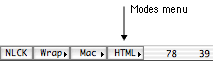
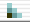

This page helps you to get started using HTML mode. On this page are listed the sections of the manual you should read first to get acquainted with the basic features. Read the pages referred to in the various paragraphs.
First open a new window and save it with a name ending by
.html. Alpha now switches to HTML mode and inserts three new menus
in the menu bar. The first one  is called the CSS menu
and contains functions for editing Cascading Style Sheets (CSS). The second
one  is called the HTML menu and the last one
is called the HTML menu and the last one  the HTML Utilities menu. When you are
editing HTML documents, make sure you are in HTML mode. Alpha automatically
switches to HTML mode when you open a document with any of the suffixes
".html", ".htm" or ".shtml". You can also manually
change mode with the mode menu in the status bar in the lower right corner
of the screen.
the HTML Utilities menu. When you are
editing HTML documents, make sure you are in HTML mode. Alpha automatically
switches to HTML mode when you open a document with any of the suffixes
".html", ".htm" or ".shtml". You can also manually
change mode with the mode menu in the status bar in the lower right corner
of the screen.
Giving attributes to HTML elements
You can obviously insert new tags in an HTML document simply by typing
them, but Alpha can help you to do it more efficiently. Alpha can let you give
values to the attributes of an HTML element in two different ways. Either
you can use traditional dialog windows, or you can let Alpha ask you to
type the attribute values in the status bar. Try both ways to see which
you like best. You find all HTML elements in the various submenus of the
HTML menu.
How to use template stops
If you now have inserted a couple of HTML tags you should have noticed the
black bullets (•). They
are called template stops and are supposed to help you navigate in the document.
The tab key lets you jump to the next bullet and automatically deletes it.
Text wrapping
It's easy to insert a pair of tags around some text. First select the
text. Then choose an HTML element from a menu and the tags are inserted
around the selection.
Word completion
Sometimes it's more convenient to simply type the code rather than using a
dialog window. To help you there is a clever word completion mechanism.
Type a few letters, hit ctrl-tab and Alpha
tries to complete what you have typed as much as possible. This has two
advantages: it saves you key strokes and it makes sure you don't misspell
anything.
Editing submenu
Writing HTML code is not only a matter of inserting tags in a document. You
often want to delete tags or modify them. Many of the items in the Editing
submenu of the HTML Utilities menu makes it easier to modify the code.
Command-double-click
Command-double-clicking is useful for many things. For example,
command-double-clicking on a link opens that file, command-double-clicking
on an opening tag lets you change the attributes.
Configuring HTML mode
If you have read the sections referred to above you should have got a
feeling about the basic concepts of this HTML environment. The next thing
you should do before you go on is to give Alpha some information about
your home page. This information is needed to use HTML mode in the best
way.
Deciding which attributes to be asked
about
Most HTML elements have very many attributes. Therefore you can configure
which attributes to be asked about for the various elements. This is not
something you have to do immediately while you're still learning to use
HTML mode, but it is strongly recommended that you do that before beginning
to use it seriously.
There are still many things to learn, but I let you explore the rest of HTML mode by yourself. Most parts of the manual are independent and you can therefore read the pages basically in any order you like.